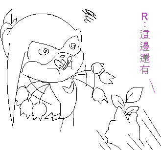

ＲＥsonic2358：
喔，我這張只有用小畫家完成
因為紅色畫久了眼睛不太舒服，所以就沒再拿ＰＳ修圖了 ＠ˇ＠＂
其實我本來不是要畫這種淡淡的背景，只是昨天試畫時感覺還不錯就這樣定稿了∼
感謝支持喔
ＲＥ冰翼：
哈，忘記在標題註明＂閃光彈注意＂ ＞▽＜ ←
分明就故意的 ＲＥ細粒：
喔，因為我以前很常用鉛筆畫樹木、尤其是樹皮的木紋
所以大概能用電繪畫出來吧∼？
其實樹沒有想像中的難畫，只要把樹皮畫的多幾道歪扭的痕跡、看起來有些老的感覺就好了∼∼
綜合冰翼＋細粒的問題：
所以說...妳們的意思就是...下面這樣？

附件: 餵食.PNG
嗯...納克果然很受... ＝ω＝＋
（誤很大）
ＲＥandrewsonic：
是啊是啊∼不過當她遇到納克時受的位置就要換人坐了（我在鬼扯什麼啊...？）
原先想把這張圖畫的更猛的... ＝ω＝＋＋
不過我擔心我會被以妨礙風化禁言所以就稍微收斂了...lllb
（呃，給個提示，畢竟露露是蝙蝠，所以裡標題的另一個含義就是指...嗯，再說下去就要獵奇了 ＝３＝＂ ）
至於納克受不受？
請參考上面的塗鴉圖...（被拖走）
[
本文最後由 orzilovepm 於 2009/5/12 10:32 PM 編輯 ]